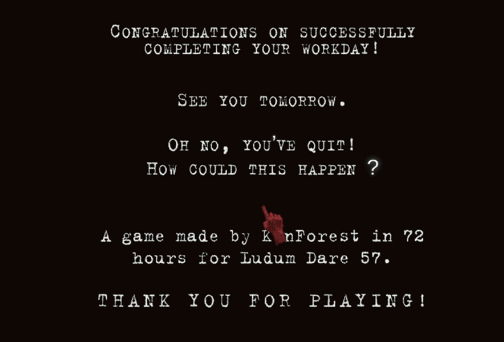

Is Subterranean Research Worth it? – A Red Finger Game Analysis
12/16/25 By Victoria Cain
Red Finger is a short indie horror game made by Kenforest in an impressive 72 hours. The game currently lives on itch.io and takes about 20 minutes to play. The game uses simple but effective controls. Movement is done with WASD, and interaction with objects (like buttons and the sink) is accomplished with the left mouse button.
You’re a brand new employee at a seemingly rotting research facility that is all subterranean. Before your first day, you sign papers acknowledging safety protocols you were never given. Beginning your first day with unease, you enter the dark and damp facility to be greeted by an elevator. The only way is down, and your unease grows as you descend.
There are certain features I could appreciate for its world-building. Between the introduction at the beginning and the graphics, I felt immersed in the game. The graphics are relatively simple for a 3D interactive world. The art style is almost “stippled” in a way, while everything is low-poly and low-res. The colors are dark and muted, with the only real source of color coming from the lights, glowing buttons, and your red finger.
The old research complex feels weathered, with rust coating metal surfaces, overhead fluorescent lights flickering faintly, and square box lights casting a harsh glow throughout the facility. A meter counter keeps track of how far below ground you’ve gone, reinforcing the feeling of isolation and depth. Wooden boxes and metal barrels sit abandoned along the skybridge walkways, suggesting long-forgotten work and adding to the ambiance of the world.
You are challenged in this game by entering codes on each level, descending to the basement each time. It is made even more difficult by having to press the broken elevator button, which heats your poor red finger after a short time. To cool down your finger, you must run it under the water in the sink. In addition to the elevator button and sink, objects such as your code paper and code buttons serve as tangible goals. You must find and use the correct codes on each floor to progress.
Additionally, you must turn the light off when the robot monster comes down to scan for life. The robot scanner enemy hunts by detecting light and movement, encouraging players to use darkness strategically and move cautiously.
Once you reach the basement, you must run back to the elevator and quickly ascend back up with only 20 seconds on the clock. You are forced to cross a narrow, exposed path cluttered with obstacles like wooden boxes and barrels, adding a movement challenge under pressure.
The sounds also contribute to this beautifully eerie game. There’s lots of echoing, screeching, and whirring from the monster when he investigates, the grating of the elevator gates, and, of course, the rubber goose honk. Otherwise, it's a very quiet game. A great direction for this game in the future would be to add more levels and more enemies.

Check out my network analysis I did of RedFinger below!